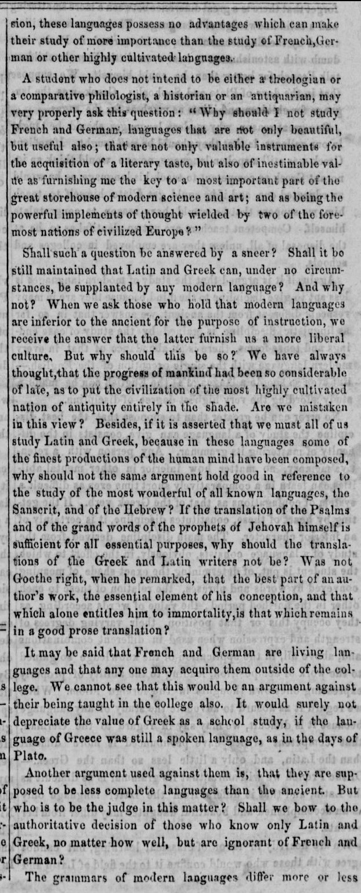

Optimal Image Conversion Settings for Tesseract OCR
by Kazimier Smith
2013/07/17
Introduction
Optical character recognition (OCR) is a very useful tool for making PDFs easier to search through and analyze. Essentially, OCR recognizes letter and words in images and scanned PDF files, and gives us the combined text. At Mazira, our document processing engine uses a variety of OCR tools for dealing with large collections of scanned documents. In the open source world, Tesseract is widely considered the best OCR program, with highly accurate text recognition and success with text in a variety of formats and languages. Out of the box, Tesseract can produce some good results, but to get the most out of it in the shortest amount of time, we have to dig a little deeper.
Basic Tesseract
Tesseract cannot perform OCR on PDFs directly; it requires an image file such as PNG or TIFF. Thus, PDFs have to be converted before Tesseract can use them. One great program for the job is Ghostscript, an interpreter and manipulator for PostScript and PDF files. For now we’ll focus on the latter. Ghostscript offers a large number of command line arguments to create varied images from PDFs. A simple command might look like this (the PDF we’ll use is here, and we’ll just work with the first page for now):
$ gs -sDEVICE=png16m -dFirstPage=1 -dLastPage=1 -o ./output_image.png
my_pdf.pdf
-sDEVICE specifies the output device Ghostscript should use. In this case png16m means Ghostscript should output to a 24 bit color PNG. -dFirstPage=1 and -dLastPage=1 specify the pages to convert. The -o flag specifies the output file. Let’s try running Tesseract on this file:
$ tesseract output_image.png output_text
This generates the file output_text.txt, which contains the text Tesseract extracted from the image. But how accurate is it? I have a file, good_text.txt, in which I typed out exactly what the extracted text should be. We’ll use Wdiff to compare the files:
$ wdiff -s3 good_text.txt output_text.txt
The important part is at the bottom:
$ good_text.txt: 238 words 3 1% common 0 0% deleted 235 99% changed
Ouch. 1% correct. What happened to “best open source OCR tool”?
Resolution
As it turns out, Tesseract isn’t the culprit. Ghostscript is. Ghostscript defaults to converting the image at 72 DPI, which is very low, preventing Tesseract from accurately analyzing the text. Here is the image; clearly the quality is very low. Let’s try converting the image at a higher resolution:
$ gs -sDEVICE=png16m -dFirstPage=1 -dLastPage=1 -r200 -o
./output_image.png my_pdf.pdf
The -r flag specifies the DPI to convert the image at. Now we’ll run Tesseract and Wdiff as before, and we get:
$ good_text.txt: 238 words 204 86% common 0 0% deleted 34 14%
changed
That’s more like it. What if we try 300 DPI? 88% common. 500 DPI? 87% common. 1000 DPI? 88% common. A little weird, but clearly diminishing returns kick in after about 300 DPI. Let’s try timing these commands to see which is most efficient; I’ll create a script to run Ghostscript, Tesseract, and Wdiff easily, and use the time command to see how long it takes to execute.
- 200 DPI: about 16.5 seconds (86% correct)
- 300 DPI: about 16.5 seconds (88% correct)
- 500 DPI: about 24 seconds (87% correct)
- 1000 DPI: about 47.4 seconds (88% correct)
300 DPI is clearly ideal. (And here’s part of the much nicer image to prove it).
Interpolation
But there are several other ways to increase Tesseract’s accuracy. The next one we’ll look at is interpolation. Interpolation is designed to improve the quality of images that have been upscaled from a smaller size. Let’s see how it affects Tesseract:
$ gs -sDEVICE=png16m -dINTERPOLATE -dFirstPage=1 -dLastPage=1 -r300 -o
./output\_image.png my\_pdf.pdf
About 16.2 seconds, and 90% accuracy. A small gain, but definitely a gain, for no cost in runtime. Interpolation is probably the way to go.
Memory
Another way we can improve performance is quite simple: allow Ghostscript to use more memory. This is especially helpful on more complex PDFs. Let’s give Ghostscript 30 MB of extra RAM, by adding to our command:
$ gs -sDEVICE=png16m -dINTERPOLATE -dFirstPage=1 -dLastPage=1 -r300 -o
./output\_image.png -c 30000000 setvmthreshold -f my\_pdf.pdf
The -c switch tells Ghostscript to interpret the following segments as PostScript code, and the -f switch ends the list of commands interpreted as PostScript. When we run Tesseract on the new image, we still get 90% accuracy, at about 16.3 seconds runtime. There’s no advantage for our small, relatively simple document, but for larger, more complex documents, giving Ghostscript more RAM will increase performance and runtime. If you’re writing software designed to use Ghostscript on many different documents, it’s a good idea to use setvmthreshold by default to ensure maximum performance on all documents. It doesn’t cost anything (unless memory is very limited) to use it, even if it doesn’t benefit all conversions.
Multithreading
One option I discovered that lowers runtime slightly is -dNumRenderingThreads, which tells Ghostscript to use the specified number of background threads for rendering. I was able to shave about 0.6 seconds off the execution time when I set -dNumRenderingThreads=8 (running on my laptop’s Intel i7 3630QM at 2.40 GHz, which has hyperthreading). Ghostscript recommends setting this option to the maximum number of available cores, and my tests confirmed that this recommendation offers the best performance.
Miscellaneous
Lastly, there are a couple other options we can add to improve the Ghostscript command, namely the -dSAFER switch, which prevents unwanted file writing, and -dQUIET to suppress some console output.
Conclusion
So, our final command looks like this:
$ gs -dSAFER -sDEVICE=png16m -dINTERPOLATE -dNumRenderingThreads=8
-dFirstPage=1 -dLastPage=1 -r300 -o ./output\_image.png -c 30000000
setvmthreshold -f my\_pdf.pdf
Ghostscript offers us many different options and tools to generate images best suited for OCR. Different options will be necessary for different scenarios and may work differently on different machines; the best way to find the ideal configuration is to experiment!